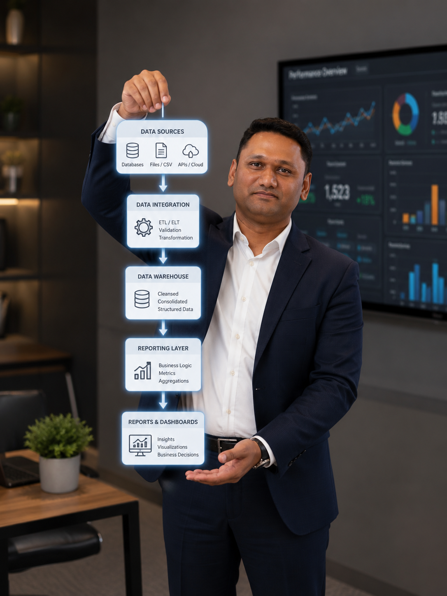

Delivery Leadership
Planning, prioritisation, dependencies, risk management, release coordination and outcome-focused execution across business and technology teams.
Melbourne · Enterprise Data · 15+ Years
Gowrikarthick Balasundaram
Known professionally as Karthick Bala
I help organisations modernise, migrate and trust their data by combining hands-on technical expertise, delivery leadership and strong stakeholder collaboration.

01 · About
A data professional who moves comfortably between business priorities, technical detail and delivery leadership.
I am a Melbourne-based data professional with 15+ years of experience across enterprise data warehousing, migration, quality, integration, BI and analytics. My strength is translating business objectives into practical, reliable delivery across complex data environments.
I lead planning, stakeholder engagement, dependencies, release readiness and team coordination while remaining hands-on with SQL, Python, reconciliation, root-cause analysis and business-rule validation.
02 · Capabilities
The ability to lead complex change, work through technical detail and keep teams aligned to business outcomes.
Planning, prioritisation, dependencies, risk management, release coordination and outcome-focused execution across business and technology teams.
Requirements, source-to-target mapping, transformation alignment, cutover readiness and reconciliation across legacy, cloud, CRM and warehouse environments.
Profiling, integrity checks, validation rules, defect triage, root-cause analysis and reusable SQL-based reconciliation.
KPI interpretation, reporting requirements, dashboard delivery and validation of trusted downstream insights.
Workshops, business engagement, vendor coordination, mentoring and leadership of onshore, offshore and cross-functional teams.
Advanced SQL, Python scripting, ETL/ELT validation, automation and practical technical problem-solving throughout delivery.
03 · Technology
A broad enterprise stack shaped by data platforms, integration, quality, reporting and delivery tooling.
PostgreSQL · SQL Server · Oracle · DB2 · Teradata · Sybase · MySQL
AWS S3 · Airflow · ETL / ELT · Attacama MDM · Salesforce
Power BI · Tableau · SSRS · IBM Cognos · BIRT
SQL · Python
Jira · Confluence · Zephyr · HP ALM / QC · Miro
04 · Career
A career that began in detailed ETL and BI validation and evolved into enterprise data delivery leadership.
Preparing to lead enterprise data delivery for a major Victorian member organisation, supporting large-scale transformation, migration and modern data initiatives.
Nov 2025 – Aug 2026. Continued hands-on learning across modern data engineering, AI and analytics while delivering reporting and automation solutions using SharePoint, SQL, Excel, Power BI and Power Apps.
Data Delivery & Quality Lead across aged care, wealth, capital markets, EDW, MDM, Salesforce and analytics initiatives.
Data Integration Analyst supporting insurance data warehouse integration and Salesforce migration, with responsibility for data quality and release readiness.
Senior Associate across enterprise BI and data warehouse programs in healthcare and financial services.
ETL and BI Test Engineer supporting financial data warehouse migration and compliance initiatives.
05 · Delivery Approach
Business intent, source landscape, risks and success criteria.
Requirements into mappings, rules, controls and delivery plans.
Data movement, transformation, quality, reconciliation and reporting.
Business, engineering, QA, operations and vendor teams.
Release confidence, evidence, sign-off and operational readiness.
06 · Leadership
“Successful data delivery happens when business trust, technical quality and collaborative leadership come together.”
Make technical risks, data issues and delivery choices understandable to business stakeholders.
Use SQL, reconciliation and technical investigation when evidence is needed.
Bring product, engineering, QA, operations and vendors together around shared outcomes.
08 · Contact
Let's connect to discuss enterprise data, delivery strategy, migration, analytics or potential collaboration.